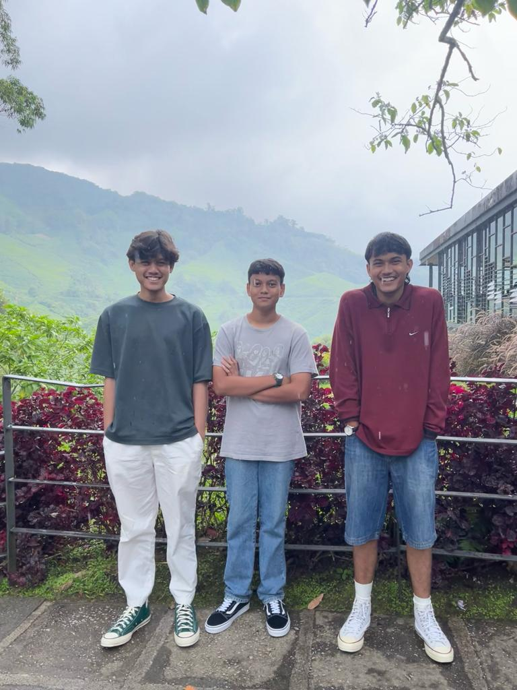

My Lovely Family

Family is the heart of my world, and in its simplicity lies its beauty. In this part, I want to share the joy and warmth that my family brings to my life. They make me the happiest especially through those darkest days and i appreciate them. First, i'll talk about my beloved parents.
My father's name is Rashidi bin Omar. He was born at Jelutong, Penang and in 12 September 1978. He got married at the age of 22 with my mother and is currrently working under a retail store. He's the best father in the world as he is very calm and is often joyful. He would never neglect us and would give his fullest attention to us. Next, my mother who's named Normala binti Aziz and was born at Permatang Pauh, Penang. Her birth date is 24 of Jun 1978. My father and mother is the same age. My mother is working as a sales manager at a hotel and she is very dutiful. Eventhough she can be seen as strict and demanding, she always shower us with her love and always give supporting words. I appreciate them so much that I want to always give my best to make them happy. As the oldest son, my biggest fear would be to dissapoint them.
Next, I will be talking about my two brothers. Firstly, Riyadh Naufal bin Rashidi is my younger brother who's currently 19 years old. His birth date is 1 September 2004 and is currently studying in UiTM Kedah, the same university as mine. The course he's taking is Diploma in Business Management and is currently in his second semester. He is the most rebellious amongst the three of us and the bravest. He is a sport person and is really good at track and field. He achieved lots of medal during his school years.
Next, my youngest brother who's named Rayqal Nidal bin Rashidi and he's currently 12 years old. He is a cheerful and funny person and always the happy-go-lucky type. He will be taking his examinations next year before moving on to high school.